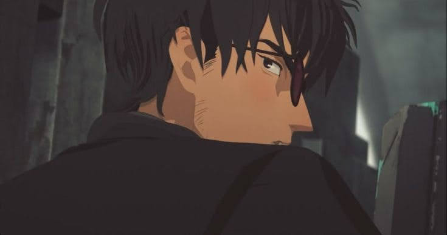

Lunes
17/04/2023
Nicholas D. Wolfwood
"No somos nada como Dios. No sólo nuestros poderes son limitados, sino que a veces somos impulsados a convertirnos en el mismo diablo." — Nicholas D. Wolfwood
Wolfwood representa la crueldad humana cuando está en problemas. Es completamente contradictorio, un sacerdote que mata y un hombre forzado al mal sin querer. Él cree que los humanos no pueden cambiar y se considera una causa perdida a los ojos de Dios, creyéndose imperdonable por su pasado; así que continúa matando y enfrentando sus pecados de la manera opuesta a la de Vash, sintiéndose defectuoso al ver cómo Vash no logra matar.
Read more